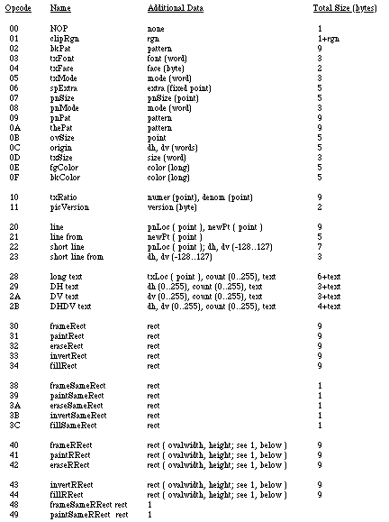
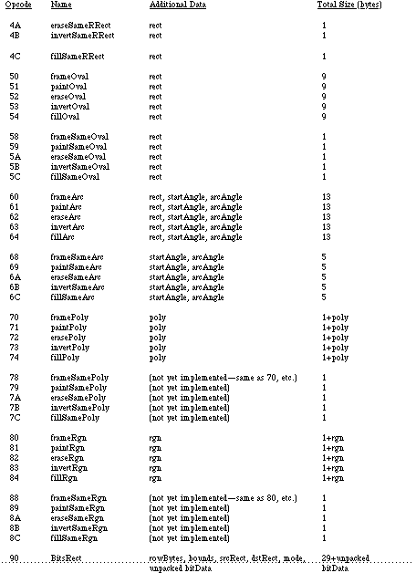
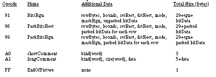
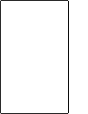
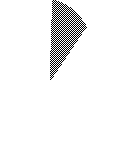

|
|
This technical note describes the internal format of the QuickDraw picture data
structure. This revision corrects some errors in the opcode descriptions and
provides some examples.
[Apr 01 1985]
|
Introduction
This technical note describes the internal definition of the QuickDraw picture.
The information given here only applies to QuickDraw picture format version 1.0
(which is always created by Macintoshes without Color QuickDraw). Picture
format version 2.0 is documented in the Color QuickDraw chapter of Inside
Macintosh. This information should not be used to write your own picture
bottleneck procedures; if we add new objects to the picture definition, your
program will not be able to operate on pictures created using standard
QuickDraw. Your program will not know the size of the new objects and will,
therefore, not be able to proceed past the new objects. (What this ultimately
means is that you can't process a new picture with an old bottleneck proc.)
Back to top Terms
An opcode is a number that DrawPicture uses to determine
what object to draw or what mode to change for subsequent drawing.
The following list gives the opcode, the name of the object (or mode),
the associated data, and the total size of the opcode and data. To better
interpret the sizes, please refer to page I-91 of the Using Assembly Language
chapter of Inside Macintosh. For types not described there, here is a
quick list:
opcode byte
mode word
point 4 bytes
0..255 byte
-128..127 signed byte
rect 8 bytes
poly 10+ bytes (starts with word size for poly (incl. size word)
region 10+ bytes (starts with word size for region (incl. size word)
fixed point long
pattern 8 bytes
rowbytes word (always even)
bit data rowbytes * (bounds.bottom - bounds.top) bytes
Each picture definition begins with a picsize (word), then a
picframe (rect), and then the picture definition, which
consists of a combination of the following opcodes:



Back to top Notes
Rounded-corner rectangles use the setting of the ovSize point (see opcode $0B, above).
OpenPicture and DrawPicture set up a default set of port
characteristics when they start. When drawing occurs, if the user's settings
don't match the defaults, mode opcodes are generated. This is why there is
usually a clipRgn code after the picVersion: the default clip
region is an empty rectangle.
The only savings that the "same" opcodes achieve under the current
implementation is for rectangles. DrawPicture keeps track of the last
rectangle used and if a "same" opcode is encountered that requests a rectangle,
the last rect. will be used (and no rectangle will appear in the opcode's data).
This last section contains some Pascal program fragments that generate
pictures. Each section starts out with the picture itself (yes, they're dull)
followed by the code to create and draw it, and concludes with a commented hex
dump of the picture.
{variables used in all examples}
VAR
err: OSErr;
ph: PicHandle;
h: Handle;
r: Rect;
smallr: Rect;
orgr: Rect;
pstate: PenState; {are they in the Rose Bowl, or the state pen?}
|

I. {Rounded-corner rectangle}
SetRect(r, 20, 10, 120, 175);
ClipRect(myWindow^.portRect);
ph := OpenPicture(r);
FrameRoundRect (r, 5, 4); {r,width,height}
ClosePicture;
DrawPicture(ph, r);
'PICT' (1) 0026 {size} 000A 0014 00AF 0078 {picFrame}
1101 {version 1} 01 000A 0000 0000 00FA 0190 {clipRgn -- 10 byte region}
0B 0004 0005 {ovSize point} 40 000A 0014 00AF 0078 {frameRRect
rectangle}
FF {fin}
|

II. {Overpainted arc}
GetPenState(pstate); {save}
SetRect(r, 20, 10, 120, 175);
ClipRect(myWindow^.portRect);
ph := OpenPicture(r);
PaintArc(r, 3, 45); {r,startangle,endangle}
PenPat(gray);
PenMode(patXor); {turn the black to gray}
PaintArc(r, 3, 45); {r,startangle,endangle}
ClosePicture;
SetPenState(pstate); {restore}
DrawPicture(ph, r);
data 'PICT' (2) 0036 {size} 000A 0014 00AF 0078 {picFrame}
1101 {version 1} 01 000A 0000 0000 00FA 0190 {clipRgn -- 10 byte region}
61 000A 0014 00AF 0078 0003 002D {paintArc rectangle,startangle,endangle}
08 000A {pnMode patXor -- note that the pnMode comes before the pnPat}
09 AA55 AA55 AA55 AA55 {pnPat gray}
69 0003 002D {paintSameArc startangle,endangle}
FF {fin}
|
III. {CopyBits nopack, norgn, nowoman, nocry}
GetPenState(pstate);
SetRect(r, 20, 10, 120, 175);
SetRect(smallr, 20, 10, 25, 15);
SetRect(orgr, 0, 0, 30, 20);
ClipRect(myWindow^.portRect);
ph := OpenPicture(r);
PaintRect(r);
CopyBits (myWindow^.portBits, myWindow^.portBits,
smallr, orgr, notSrcXor, NIL);
{note: result BitMap is 8 bits wide instead of the 5 specified by smallr}
ClosePicture;
SetPenState(pstate); {restore the port's original pen state}
DrawPicture(ph, r);
data 'PICT' (3) 0048 {size} 000A 0014 00AF 0078 {picFrame}
1101 {version 1} 01 000A 0000 0000 00FA 0190 {clipRgn -- 10 byte region}
31 000A 0014 00AF 0078 {paintRect rectangle}
90 0002 000A 0014 000F 001C {BitsRect rowbytes bounds (note that bounds
is wider than smallr)}
000A 0014 000F 0019 {srcRect}
0000 0000 0014 001E {dstRect}
00 06 {mode=notSrcXor}
0000 0000 0000 0000 0000 {5 rows of empty bitmap (we copied from a
still-blank window)}
FF {fin}
|
Back to top References
QuickDraw
Color QuickDraw
Using Assembly Language
Technical Note #59--Pictures and Clip Regions
Back to top Downloadables
|

|
Acrobat version of this Note (408K).
|
Download
|
|